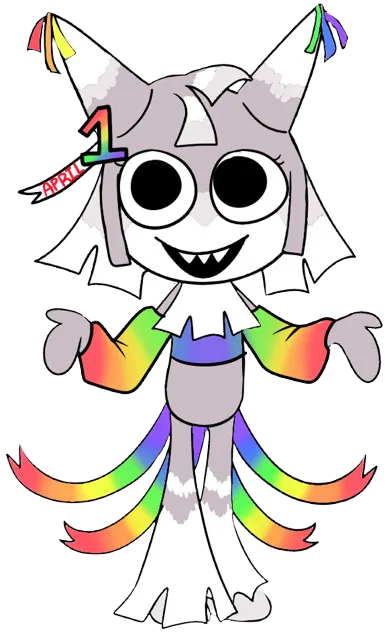

Dandy
Un toon muy feliz quiere ser bueno con todo el mundo pero él es malo.
Personajes favoritos
Un toon muy feliz quiere ser bueno con todo el mundo pero él es malo.

Duerme mucho y solo quiere dormir, él es un toon muy tranquilo.

Ella es una toon muy valiente y hace su propia bebida.

Él es muy tímido, tiene mucho miedo y es muy débil.

Él es un perro y es la mascota de Dandy y distrae a los monstruos.

Ella es inteligente pero es muy mala con Boxten y con Poppy y hace preguntas.

Ella es una toon que le gustan los dinosaurios.

Él es un gran cocinero con Cosmo.

Ella es una piñata y es acrobática.